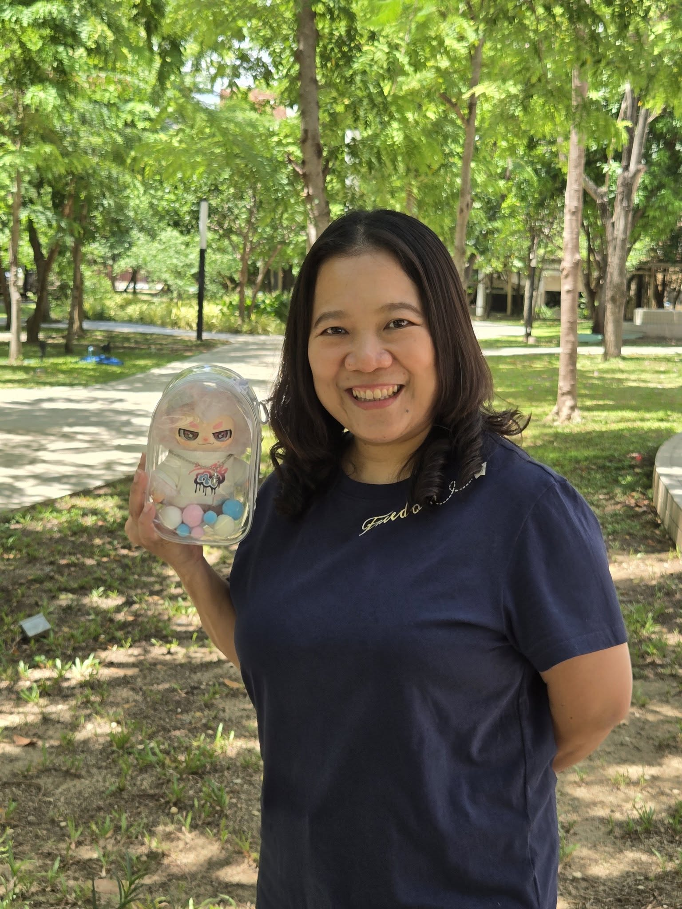

Position
Assistant Professor
Researcher and educator at the Faculty of Information and Communication Technology, Mahidol University. Working at the intersection of software engineering, health informatics, and entrepreneurship education — building tools that turn novel research into useful products.

My work sits between software engineering practice and the human problems software is meant to solve — accessibility, healthcare, learning, and the long tail of small businesses trying to ship better products.
I lead student teams from the first messy idea through international competitions and, sometimes, into the market. I also advise public agencies on ISO/IEC 29110 process improvement, and consult on identity, forensic, and e-government systems across Thailand.
Consultant — Digital Economy Promotion Agency (DEPA) & Federation of Thai Industries.
Consultant — Ministry of Foreign Affairs.
Consultant — DEPA & Federation of Thai Industries.
Consultant — DEPA & Federation of Thai Industries.
Central Institute of Forensic Science (FY2021).
Consultant — Ministry of Foreign Affairs.
Central Institute of Forensic Science (FY2019).
Consulting Committee — Central Institute of Forensic Science, Ministry of Justice.
NRCT Invention Awards 2020, ICT & Communication Arts (Team TripleX).
21st National Software Contest, Health & Medical category (Team TripleX).
Global Student Innovation Challenge 2018, Shanghai, China.
19th National Software Contest, Mobile Application category (Team Mixtio).
Asia Pacific ICT Alliance Awards, Tertiary Student Project, Taipei.
Thailand ICT Awards 2016, Tertiary Student Project category.
Microsoft Imagine Cup Worldwide 2013, Windows 8 Challenge, Saint Petersburg.
Microsoft Imagine Cup Worldwide 2012, Game Design (PC/Xbox), Sydney.
Microsoft Imagine Cup Worldwide 2011, Game Design (PC/Xbox), New York.
12th National Software Contest, RFID Application for Industry category.
Open to research collaborations, thesis supervision, public-sector consulting on software process and data governance, and guest-lecture invitations.